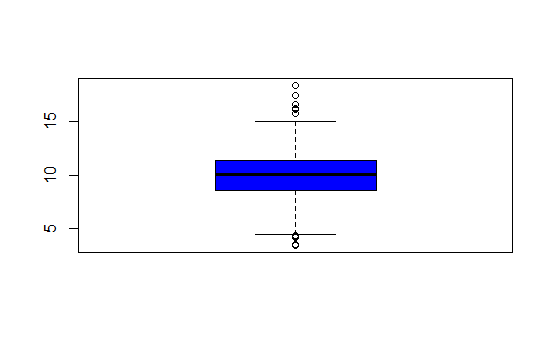

Exploratory Graphs
library(swirl)
swirl()
| Welcome to swirl! Please sign in. If you've been here before, use the same name as you did
| then. If you are new, call yourself something unique.
What shall I call you? Krishnakanth Allika
| Please choose a course, or type 0 to exit swirl.
1: Exploratory Data Analysis
2: Take me to the swirl course repository!
Selection: 1
| Please choose a lesson, or type 0 to return to course menu.
1: Principles of Analytic Graphs 2: Exploratory Graphs
3: Graphics Devices in R 4: Plotting Systems
5: Base Plotting System 6: Lattice Plotting System
7: Working with Colors 8: GGPlot2 Part1
9: GGPlot2 Part2 10: GGPlot2 Extras
11: Hierarchical Clustering 12: K Means Clustering
13: Dimension Reduction 14: Clustering Example
15: CaseStudy
Selection: 2
| | 0%
| Exploratory_Graphs. (Slides for this and other Data Science courses may be found at github
| https://github.com/DataScienceSpecialization/courses/. If you care to use them, they must
| be downloaded as a zip file and viewed locally. This lesson corresponds to
| 04_ExploratoryAnalysis/exploratoryGraphs.)
Error in (function (srcref) : unimplemented type (29) in 'eval'
Error: no more error handlers available (recursive errors?); invoking 'abort' restart
Error in readline("...") :
INTEGER() can only be applied to a 'integer', not a 'unknown type #29'
In addition: Warning message:
In readline("...") : type 29 is unimplemented in 'type2char'
| Leaving swirl now. Type swirl() to resume.
swirl()
| Welcome to swirl! Please sign in. If you've been here before, use the same name as you did
| then. If you are new, call yourself something unique.
What shall I call you? Krishnakanth Allika
| Would you like to continue with one of these lessons?
1: Exploratory Data Analysis Exploratory Graphs
2: No. Let me start something new.
Selection: 1
| Exploratory_Graphs. (Slides for this and other Data Science courses may be found at github
| https://github.com/DataScienceSpecialization/courses/. If you care to use them, they must
| be downloaded as a zip file and viewed locally. This lesson corresponds to
| 04_ExploratoryAnalysis/exploratoryGraphs.)
...
|= | 1%
| In this lesson, we'll discuss why graphics are an important tool for data scientists and
| the special role that exploratory graphs play in the field.
...
|== | 3%
| Which of the following would NOT be a good reason to use graphics in data science?
1: To understand data properties
2: To find a color that best matches the shirt you're wearing
3: To find patterns in data
4: To suggest modeling strategies
Selection: 2
| All that practice is paying off!
|=== | 4%
| So graphics give us some visual form of data, and since our brains are very good at seeing
| patterns, graphs give us a compact way to present data and find or display any pattern
| that may be present.
...
|==== | 5%
| Which of the following cliches captures the essence of graphics?
1: To err is human, to forgive divine
2: A rose by any other name smells as sweet
3: A picture is worth a 1000 words
4: The apple doesn't fall far from the tree
Selection: 3
| Excellent work!
|====== | 7%
| Exploratory graphs serve mostly the same functions as graphs. They help us find patterns
| in data and understand its properties. They suggest modeling strategies and help to debug
| analyses. We DON'T use exploratory graphs to communicate results.
...
|======= | 8%
| Instead, exploratory graphs are the initial step in an investigation, the "quick and
| dirty" tool used to point the data scientist in a fruitful direction. A scientist might
| need to make a lot of exploratory graphs in order to develop a personal understanding of
| the problem being studied. Plot details such as axes, legends, color and size are cleaned
| up later to convey more information in an aesthetically pleasing way.
...
|======== | 9%
| To demonstrate these ideas, we've copied some data for you from the U.S. Environmental
| Protection Agency (EPA) which sets national ambient air quality standards for outdoor air
| pollution. These Standards say that for fine particle pollution (PM2.5), the "annual mean,
| averaged over 3 years" cannot exceed 12 micro grams per cubic meter. We stored the data
| from the U.S. EPA web site in the data frame pollution. Use the R function head to see the
| first few entries of pollution.
head(pollution)
pm25 fips region longitude latitude
1 9.771185 01003 east -87.74826 30.59278
2 9.993817 01027 east -85.84286 33.26581
3 10.688618 01033 east -87.72596 34.73148
4 11.337424 01049 east -85.79892 34.45913
5 12.119764 01055 east -86.03212 34.01860
6 10.827805 01069 east -85.35039 31.18973
| You nailed it! Good job!
|========= | 11%
| We see right away that there's at least one county exceeding the EPA's standard of 12
| micrograms per cubic meter. What else do we see?
...
|========== | 12%
| We see 5 columns of data. The pollution count is in the first column labeled pm25. We'll
| work mostly with that. The other 4 columns are a fips code indicating the state (first 2
| digits) and county (last 3 digits) with that count, the associated region (east or west),
| and the longitude and latitude of the area. Now run the R command dim with pollution as an
| argument to see how long the table is.
dim(pollution)
[1] 576 5
| Great job!
|=========== | 13%
| So there are 576 entries in pollution. We'd like to investigate the question "Are there
| any counties in the U.S. that exceed that national standard (12 micro grams per cubic
| meter) for fine particle pollution?" We'll look at several one dimensional summaries of
| the data to investigate this question.
...
|============ | 15%
| The first technique uses the R command summary, a 5-number summary which returns 6
| numbers. Run it now with the pm25 column of pollution as its argument. Recall that the
| construct for this is pollution$pm25.
summary(pollution$pm25)
Min. 1st Qu. Median Mean 3rd Qu. Max.
3.383 8.549 10.047 9.836 11.356 18.441
| You are doing so well!
|============= | 16%
| This shows us basic info about the pm25 data, namely its Minimum (0 percentile) and
| Maximum (100 percentile) values, and three Quartiles of the data. These last indicate the
| pollution measures at which 25%, 50%, and 75% of the counties fall below. In addition to
| these 5 numbers we see the Mean or average measure of particulate pollution across the 576
| counties.
...
|============== | 17%
| Half the measured counties have a pollution level less than or equal to what number of
| micrograms per cubic meter?
1: 10.050
2: 9.836
3: 8.549
4: 11.360
Selection: 1
| You're the best!
|=============== | 19%
| To save you a lot of typing we've saved off pollution$pm25 for you in the variable ppm.
| You can use ppm now in place of the longer expression. Try it now as the argument of the R
| command quantile. See how the results look a lot like the results of the output of the
| summary command.
quantile(ppm)
0% 25% 50% 75% 100%
3.382626 8.548799 10.046697 11.356012 18.440731
| All that hard work is paying off!
|================= | 20%
| See how the results are similar to those returned by summary? Quantile gives the
| quartiles, right? What is the one value missing from this quantile output that summary
| gave you?
1: the maximum value
2: the median
3: the minimum value
4: the mean
Selection: 4
| Excellent work!
|================== | 21%
| Now we'll plot a picture, specifically a boxplot. Run the R command boxplot with ppm as an
| input. Also specify the color parameter col equal to "blue".
boxplot(ppm,col="blue")

| That's a job well done!
|=================== | 23%
| The boxplot shows us the same quartile data that summary and quantile did. The lower and
| upper edges of the blue box respectively show the values of the 25% and 75% quantiles.
...
|==================== | 24%
| What do you think the horizontal line inside the box represents?
1: the maximum value
2: the mean
3: the minimum value
4: the median
Selection: 4
| Nice work!
|===================== | 25%
| The "whiskers" of the box (the vertical lines extending above and below the box) relate to
| the range parameter of boxplot, which we let default to the value 1.5 used by R. The
| height of the box is the interquartile range, the difference between the 75th and 25th
| quantiles. In this case that difference is 2.8. The whiskers are drawn to be a length of
| range2.8 or 1.52.8. This shows us roughly how many, if any, data points are outliers,
| that is, beyond this range of values.
...
|====================== | 27%
| Note that boxplot is part of R's base plotting package. A nice feature that this package
| provides is its ability to overlay features. That is, you can add to (annotate) an
| existing plot.
...
|======================= | 28%
| To see this, run the R command abline with the argument h equal to 12. Recall that 12 is
| the EPA standard for air quality.
abline(h=12)

| That's a job well done!
|======================== | 29%
| What do you think this command did?
1: drew a horizontal line at 12
2: hid 12 random data points
3: drew a vertical line at 12
4: nothing
Selection: 1
| Keep up the great work!
|========================= | 31%
| So abline "adds one or more straight lines through the current plot." We see from the plot
| that the bulk of the measured counties comply with the standard since they fall under the
| line marking that standard.
...
|=========================== | 32%
| Now use the R command hist (another function from the base package) with the argument ppm.
| Specify the color parameter col equal to "green". This will plot a histogram of the data.
hist(ppm,col="green")

| You nailed it! Good job!
|============================ | 33%
| The histogram gives us a little more detailed information about our data, specifically the
| distribution of the pollution counts, or how many counties fall into each bucket of
| measurements.
...
|============================= | 35%
| What are the most frequent pollution counts?
1: between 9 and 12
2: between 12 and 14
3: between 6 and 8
4: under 5
Selection: 1
| You're the best!
|============================== | 36%
| Now run the R command rug with the argument ppm.
rug(ppm)
| That's correct!
|=============================== | 37%
| This one-dimensional plot, with its grayscale representation, gives you a little more
| detailed information about how many data points are in each bucket and where they lie
| within the bucket. It shows (through density of tick marks) that the greatest
| concentration of counties has between 9 and 12 micrograms per cubic meter just as the
| histogram did.
...
|================================ | 39%
| To illustrate this a little more, we've defined for you two vectors, high and low,
| containing pollution data of high (greater than 15) and low (less than 5) values
| respectively. Look at low now and see how it relates to the output of rug.
low
[1] 3.494351 4.186090 4.917140 4.504539 4.793644 4.601408 4.195688 4.625279 4.460193
[10] 4.978397 4.324736 4.175901 3.382626 4.132739 4.955570 4.565808
| All that hard work is paying off!
|================================= | 40%
| It confirms that there are two data points between 3 and 4 and many between 4 and 5. Now
| look at high.
high
[1] 16.19452 15.80378 18.44073 16.66180 15.01573 17.42905 16.25190 16.18358
| Excellent job!
|================================== | 41%
| Again, we see one data point greater than 18, one between 17 and 18, several between 16
| and 17 and two between 15 and 16, verifying what rug indicated.
...
|=================================== | 43%
| Now rerun hist with 3 arguments, ppm as its first, col equal to "green", and the argument
| breaks equal to 100.
hist(ppm,col="green",breaks=100)
| All that practice is paying off!
|===================================== | 44%
| What do you think the breaks argument specifies in this case?
1: the number of data points to graph
2: the number of counties exceeding the EPA standard
3: the number of buckets to split the data into
4: the number of stars in the sky
Selection: 3
| You are amazing!
|====================================== | 45%
| So this histogram with more buckets is not nearly as smooth as the preceding one. In fact,
| it's a little too noisy to see the distribution clearly. When you're plotting histograms
| you might have to experiment with the argument breaks to get a good idea of your data's
| distribution. For fun now, rerun the R command rug with the argument ppm.
rug(ppm)

| That's a job well done!
|======================================= | 47%
| See how rug works with the existing plot? It automatically adjusted its pocket size to
| that of the last plot plotted.
...
|======================================== | 48%
| Now rerun hist with ppm as the data and col equal to "green".
hist(ppm,col="green")
| Great job!
|========================================= | 49%
| Now run the command abline with the argument v equal to 12 and the argument lwd equal to
| 2.
abline(v=12,lwd=2)

| You are doing so well!
|========================================== | 51%
| See the vertical line at 12? Not very visible, is it, even though you specified a line
| width of 2? Run abline with the argument v equal to median(ppm), the argument col equal to
| "magenta", and the argument lwd equal to 4.
abline(v=median(ppm),col="magenta",lwd=4)
| You are quite good my friend!
|=========================================== | 52%
| Better, right? Thicker and more of a contrast in color. This shows that although the
| median (50%) is below the standard, there are a fair number of counties in the U.S that
| have pollution levels higher than the standard.
...
|============================================ | 53%
| Now recall that our pollution data had 5 columns of information. So far we've only looked
| at the pm25 column. We can also look at other information. To remind yourself what's there
| run the R command names with pollution as the argument.
names(pollution)
[1] "pm25" "fips" "region" "longitude" "latitude"
| Keep up the great work!
|============================================= | 55%
| Longitude and latitude don't sound interesting, and each fips is unique since it
| identifies states (first 2 digits) and counties (last 3 digits). Let's look at the region
| column to see what's there. Run the R command table on this column. Use the construct
| pollution$region. Store the result in the variable reg.
reg<-table(pollution$region)
| All that practice is paying off!
|============================================== | 56%
| Look at reg now.
reg
east west
442 134
| Nice work!
|================================================ | 57%
| Lot more counties in the east than west. We'll use the R command barplot (another type of
| one-dimensional summary) to plot this information. Call barplot with reg as its first
| argument, the argument col equal to "wheat", and the argument main equal to the string
| "Number of Counties in Each Region".
barplot(reg,col="wheat",main="Number of Counties in Each Region")
| You are quite good my friend!
|================================================= | 59%
| What do you think the argument main specifies?
1: the y axis label
2: the title of the graph
3: the x axis label
4: I can't tell
Selection: 2
| You are doing so well!
|================================================== | 60%
| So we've seen several examples of one-dimensional graphs that summarize data. Two
| dimensional graphs include scatterplots, multiple graphs which we'll see more examples of,
| and overlayed one-dimensional plots which the R packages such as lattice and ggplot2
| provide.
...
|=================================================== | 61%
| Some graphs have more than two-dimensions. These include overlayed or multiple
| two-dimensional plots and spinning plots. Some three-dimensional plots are tricky to
| understand so have limited applications. We'll see some examples now of more complicated
| graphs, in particular, we'll show two graphs together.
...
|==================================================== | 63%
| First we'll show how R, in one line and using base plotting, can display multiple
| boxplots. We simply specify that we want to see the pollution data as a function of
| region. We know that our pollution data characterized each of the 576 entries as belonging
| to one of two regions (east and west).
...
|===================================================== | 64%
| We use the R formula y ~ x to show that y (in this case pm25) depends on x (region). Since
| both come from the same data frame (pollution) we can specify a data argument set equal to
| pollution. By doing this, we don't have to type pollution$pm25 (or ppm) and
| pollution$region. We can just specify the formula pm25~region. Call boxplot now with this
| formula as its argument, data equal to pollution, and col equal to "red".
boxplot(pm25~region,data=pollution,col="red")
| Perseverance, that's the answer.
|====================================================== | 65%
| Two for the price of one! Similarly we can plot multiple histograms in one plot, though to
| do this we have to use more than one R command. First we have to set up the plot window
| with the R command par which specifies how we want to lay out the plots, say one above the
| other. We also use par to specify margins, a 4-long vector which indicates the number of
| lines for the bottom, left, top and right. Type the R command
| par(mfrow=c(2,1),mar=c(4,4,2,1)) now. Don't expect to see any new result.
par(mfrow=c(2,1),mar=c(4,4,2,1))
| That's a job well done!
|======================================================= | 67%
| So we set up the plot window for two rows and one column with the mfrow argument. The mar
| argument set up the margins. Before we plot the histograms let's explore the R command
| subset which, not surprisingly, "returns subsets of vectors, matrices or data frames which
| meet conditions". We'll use subset to pull off the data we want to plot. Call subset now
| with pollution as its first argument and a boolean expression testing region for equality
| with the string "east". Put the result in the variable east.
east<-subset(pollution,region=="east")
| Keep working like that and you'll get there!
|======================================================== | 68%
| Use head to look at the first few entries of east.
head(east)
pm25 fips region longitude latitude
1 9.771185 01003 east -87.74826 30.59278
2 9.993817 01027 east -85.84286 33.26581
3 10.688618 01033 east -87.72596 34.73148
4 11.337424 01049 east -85.79892 34.45913
5 12.119764 01055 east -86.03212 34.01860
6 10.827805 01069 east -85.35039 31.18973
| Excellent work!
|========================================================== | 69%
| So east holds more information than we need. We just want to plot a histogram with the
| pm25 portion. Call hist now with the pm25 portion of east as its first argument and col
| equal to "green" as its second.
hist(east$pm25,col="green")

| You got it!
|=========================================================== | 71%
| See? The command par told R we were going to have one column with 2 rows, so it placed
| this histogram in the top position.
...
|============================================================ | 72%
| Now, here's a challenge for you. Plot the histogram of the counties from the west using
| just one R command. Let the appropriate subset command (with the pm25 portion specified)
| be the first argument and col (equal to "green") the second. To cut down on your typing,
| use the up arrow key to get your last command and replace "east" with the subset command.
| Make sure the boolean argument checks for equality between region and "west".
hist(subset(pollution,region=="west")$pm25,col="green")
| You are really on a roll!
|============================================================= | 73%
| See how R does all the labeling for you? Notice that the titles are different since we
| used different commands for the two plots. Let's look at some scatter plots now.
...
|============================================================== | 75%
| Scatter plots are two-dimensional plots which show the relationship between two variables,
| usually x and y. Let's look at a scatterplot showing the relationship between latitude and
| the pm25 data. We'll use plot, a function from R's base plotting package.
...
|=============================================================== | 76%
| We've seen that we can use a function call as an argument when calling another function.
| We'll do this again when we call plot with the arguments latitude and pm25 which are both
| from our data frame pollution. We'll call plot from inside the R command with which
| evaluates "an R expression in an environment constructed from data". We'll use pollution
| as the first argument to with and the call to plot as the second. This allows us to avoid
| typing "pollution$" before the arguments to plot, so it saves us some typing and adds to
| your base of R knowledge. Try this now.
with(pollution,plot(latitude,pm25))

| You nailed it! Good job!
|================================================================ | 77%
| Note that the first argument is plotted along the x-axis and the second along the y. Now
| use abline to add a horizontal line at 12. Use two additional arguments, lwd equal to 2
| and lty also equal to 2. See what happens.
abline(h=12,lwd=2,lty=2)

| That's correct!
|================================================================= | 79%
| See how lty=2 made the line dashed? Now let's replot the scatterplot. This time, instead
| of using with, call plot directly with 3 arguments. The first 2 are pollution$latitude and
| ppm. The third argument, col, we'll use to add color and more information to our plot. Set
| this argument (col) equal to pollution$region and see what happens.
plot(pollution$latitude,ppm,col=pollution$region)
| Perseverance, that's the answer.
|================================================================== | 80%
| We've got two colors on the map to distinguish between counties in the east and those in
| the west. Can we figure out which color is east and which west? See that the high (greater
| than 50) and low (less than 25) latitudes are both red. Latitudes indicate distance from
| the equator, so which half of the U.S. (east or west) has counties at the extreme north
| and south?
1: east
2: west
Selection: 2
| That's a job well done!
|==================================================================== | 81%
| As before, use abline to add a horizontal line at 12. Use two additional arguments, lwd
| equal to 2 and lty also equal to 2.
abline(h=12,lwd=2,lty=2)

| You are amazing!
|===================================================================== | 83%
| We see many counties are above the healthy standard set by the EPA, but it's hard to tell
| overall, which region, east or west, is worse.
...
|====================================================================== | 84%
| Let's plot two scatterplots distinguished by region.
...
|======================================================================= | 85%
| As we did with multiple histograms, we first have to set up the plot window with the R
| command par. This time, let's plot the scatterplots side by side (one row and two
| columns). We also need to use different margins. Type the R command par(mfrow = c(1, 2),
| mar = c(5, 4, 2, 1)) now. Don't expect to see any new result.
par(mfrow = c(1, 2),mar = c(5, 4, 2, 1))
| You are quite good my friend!
|======================================================================== | 87%
| For the first scatterplot, on the left, we'll plot the latitudes and pm25 counts from the
| west. We already pulled out the information for the counties in the east. Let's now get
| the information for the counties from the west. Create the variable west by using the
| subset command with pollution as the first argument and the appropriate boolean as the
| second.
west<-subset(pollution,region="west")
| Keep trying! Or, type info() for more options.
| Type west <- subset(pollution,region=="west") at the command prompt.
west<-subset(pollution,region=="west")
| That's the answer I was looking for.
|========================================================================= | 88%
| Now call plot with three arguments. These are west$latitude (x-axis), west$pm25 (y-axis),
| and the argument main equal to the string "West" (title). Do this now.
plot(west$latitude,west$pm25,main="West")

| You are really on a roll!
|========================================================================== | 89%
| For the second scatterplot, on the right, we'll plot the latitudes and pm25 counts from
| the east.
...
|=========================================================================== | 91%
| As before, use the up arrow key and change the 3 "West" strings to "East".
plot(east$latitude,east$pm25,main="East")

| You're the best!
|============================================================================ | 92%
| See how R took care of all the details for you? Nice, right? It looks like there are more
| dirty counties in the east but the extreme dirt (greater than 15) is in the west.
...
|============================================================================= | 93%
| Let's summarize and review.
...
|=============================================================================== | 95%
| Which of the following characterizes exploratory plots?
1: quick and dead
2: slow and clean
3: quick and dirty
4: slow and steady
Selection: 3
| That's the answer I was looking for.
|================================================================================ | 96%
| True or false? Plots let you summarize the data (usually graphically) and highlight any
| broad features
1: False
2: True
Selection: 2
| You are amazing!
|================================================================================= | 97%
| Which of the following do plots NOT do?
1: Explore basic questions and hypotheses (and perhaps rule them out)
2: Conclude that you are ALWAYS right
3: Suggest modeling strategies for the "next step"
4: Summarize the data (usually graphically) and highlight any broad features
Selection: 2
| That's a job well done!
|================================================================================== | 99%
| Congrats! You've concluded exploring this lesson on graphics. We hope you didn't find it
| too quick or dirty.
...
|===================================================================================| 100%
| Would you like to receive credit for completing this course on Coursera.org?
1: Yes
2: No
Selection: 2
| Excellent job!
| You've reached the end of this lesson! Returning to the main menu...
| Please choose a course, or type 0 to exit swirl.
1: Exploratory Data Analysis
2: Take me to the swirl course repository!
Selection: 0
| Leaving swirl now. Type swirl() to resume.
rm(list=ls())
Last updated 2020-05-02 19:17:35.849963 IST
Comments